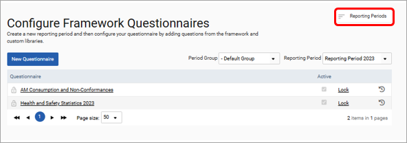
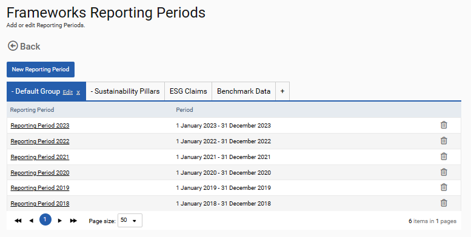
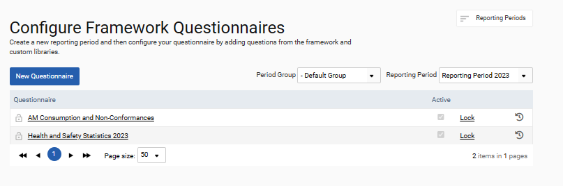
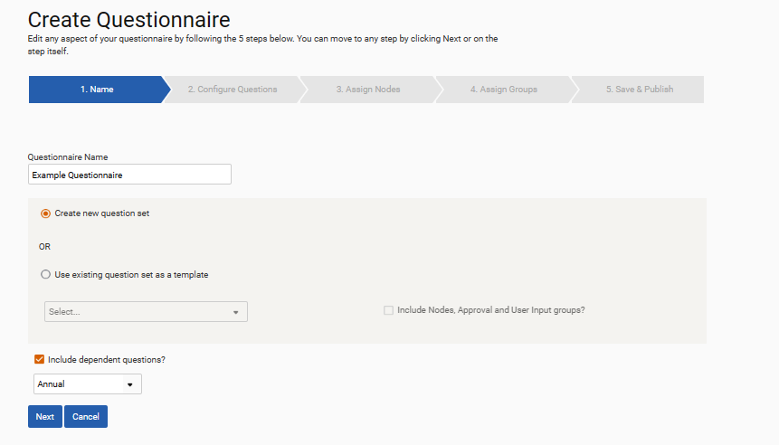
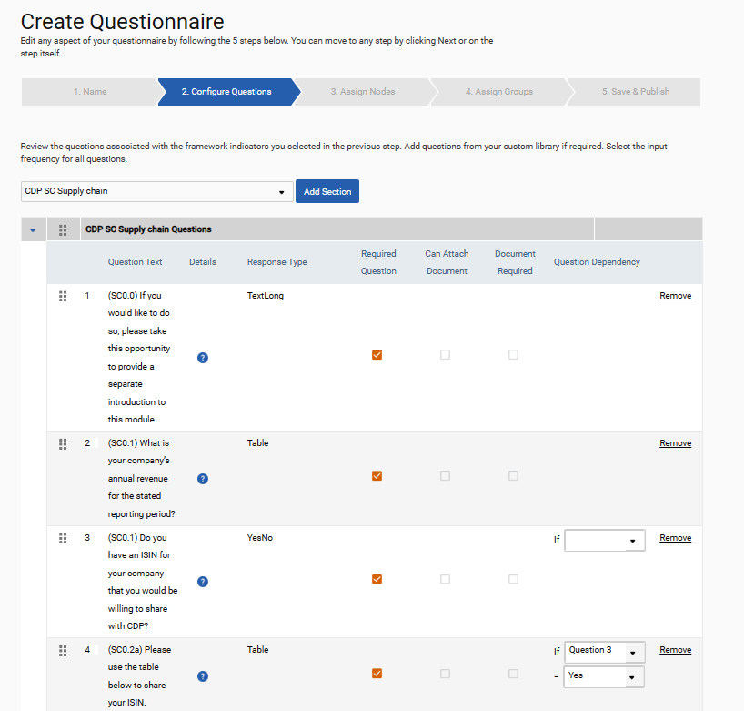
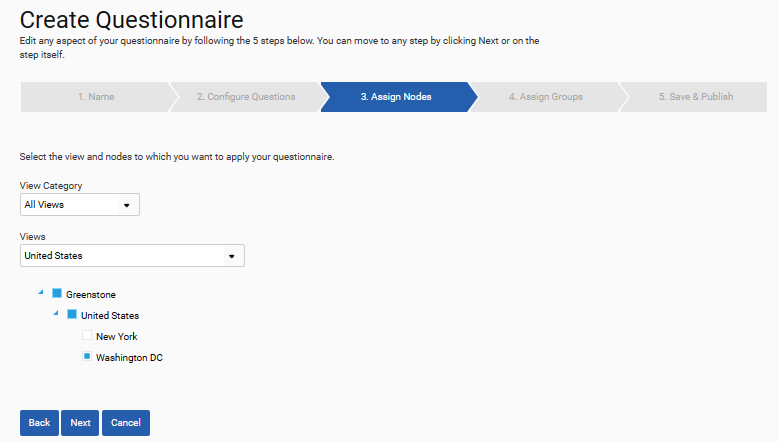
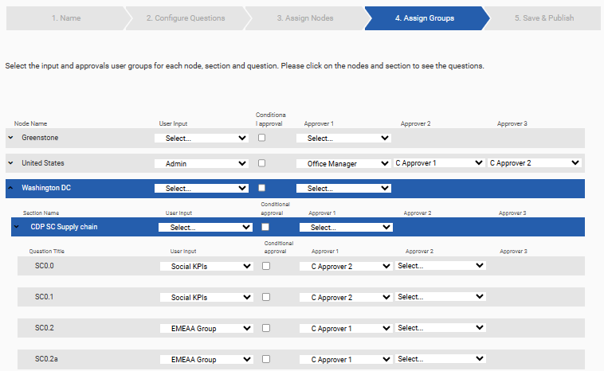
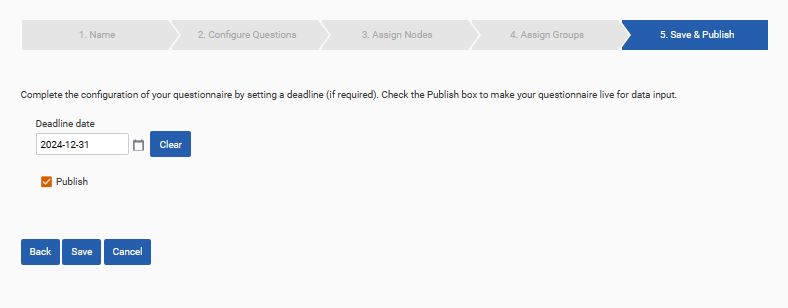

The configures questionnaire section allows for questionnaires to be created, assigned to nodes and associated permissions set.
Reporting Periods
To get going, create a reporting period. Reporting periods are 12-month periods that questionnaires are assigned to and for which data is collected for. To create a reporting period, select the reporting period button.

Multiple period groups can be created in this section. Reporting periods in the same period group will have matching start and end months. Different period groups can be used to reflect different fiscal periods. For example, one period group could be used for the calendar year, and another for the financial year.
To create a new period group click the plus icon, give the group a name and click Add. To add a reporting period select the New Reporting Period button. Provide the period a name, a start and end date, and allocate it to a reporting period. Finally click save.

Creating a questionnaire
Once you have finished setting up your reporting periods, return to ‘Admin Settings > Frameworks > Configure Questionnaire’. Select the reporting group and period to which you would like to allocate a questionnaire and select the New Questionnaire button to begin setup.

Give the questionnaire a name and specify if you would like to create a brand-new questionnaire from scratch or select ‘Use existing question set as a template’ to copy an existing questionnaire. Selecting the Include Nodes, Approval and User Input groups tick box allows the permissions of the questionnaire to be copied alongside the questions within it. Finally, select the Include dependent questions? tick-box if you would like to incorporate questionnaire branching. When you are finished making your selections select the Next button.

In the next tab, sections and questions can be added to the questionnaire. These are created in the custom question library, which is outlined in the next section. Select a section from the dropdown and click Add Section. Repeat this process until each of the required sections have been added to the questionnaire. To add questions to the section, select the +Add Custom Question button. Select the questions you would like to add from the dropdown and select Add Questions. Repeat this process for each section until the questionnaire contains all the required questions.
To add questionnaire branching, and to specify which questions are mandatory or require supporting documentation select the arrow to the left of the section name. Tick the relevant boxes to make a question mandatory and to allow or mandate attachments. Finally, the question dependency column can be used to manage questionnaire branching. For example, in the example below, question 4 will only appear if the answer to question 3 is Yes.
Sections and questions can be reordered by hovering over the 6-dot icon and dragging and dropping.

When you have finished adding and managing questions select the Next button to go to the assign nodes tab. Here, the questionnaire can be assigned to nodes. The questionnaire will become available on each of the nodes to which it is assigned. Select the view from the dropdown and select the nodes you would like to add the questionnaire to and click next to move to the next tab.

The questionnaire is now configured, and input users and approvers can be assigned at either the node level, the section level or the individual question level. If an input user is not set, only users with frameworks supervisor and frameworks auditor roles will be able to view the question.
In the example below, no input user or approver has been set in the Greenstone node, meaning no user group has been assigned permission to answer this questionnaire, and data will not be collected. In the United States node, Admin has been set as the input user group at the node level. This means all questions under this node will be answerable by this user group. The Office Manager user group has first approver access while the user groups C Approver 1 and C approver 2 have are the 2nd and 3rd approver groups respectively. Finally, under the Washington DC node, different inputter groups and approver groups have been assigned for each question. The social KPIs user groups have permission to answer questions SC0.0 and SC0.1 and the C Approver 2 user group carries out the only approval step. Similarly, the EMEAA Group user group has been assigned to answer questions SC0.2 and SC0.2a and the C approver 1 user group can carry out the only approval step for these questions.

Step 8
The final stage of setting up a questionnaire is to make it available for data input by selecting the ‘Publish’ box and then clicking ‘Save’. You may wish to Save/Edit the questionnaire before selecting to make it available for input.
A deadline for when a questionnaire must be completed can now be set on the final tab of the configure questionnaire process. If a deadline is set, then a reminder email is sent out to all users in all of the groups assigned as input or approver groups at the following times:
